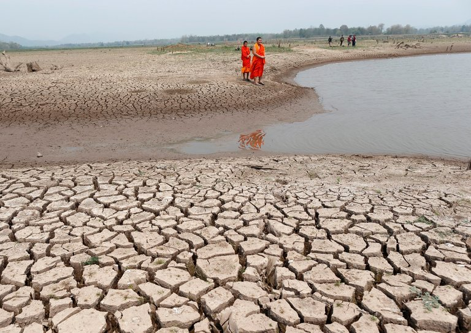
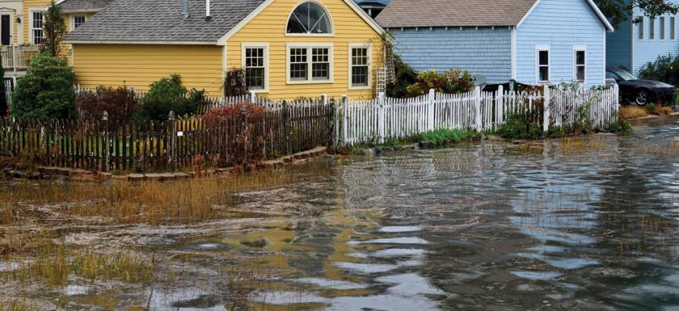
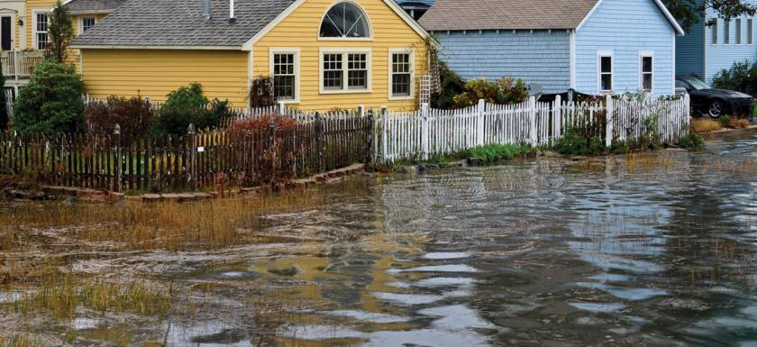
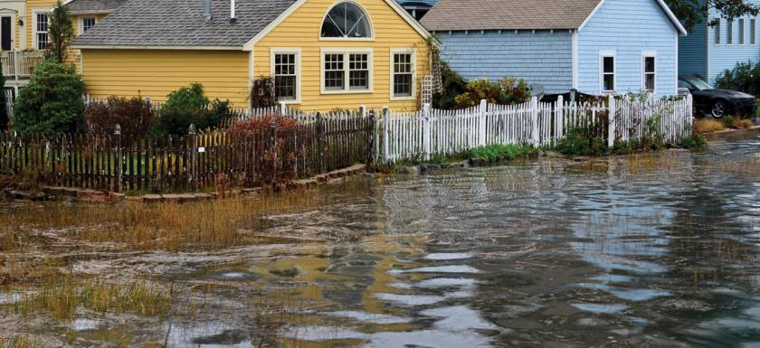
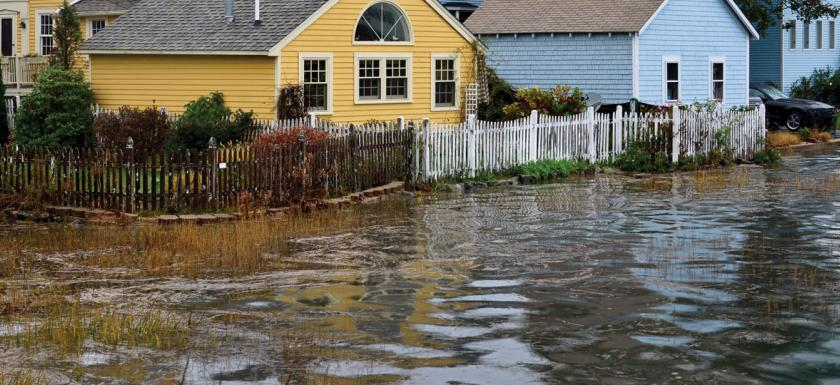

Global Warming Impact


 





Global climate change has already had observable effects on the environment. Glaciers have shrunk, ice on rivers and lakes is breaking up earlier, plant and animal ranges have shifted and trees are flowering sooner. Effects that scientists had predicted in the past would result from global climate change are now occurring: loss of sea ice, accelerated sea level rise and longer, more intense heat waves.
Taken as a whole, the range of published evidence indicates that the net damage costs of climate change are likely to be significant and to increase over time.
Scientists have high confidence that global temperatures will continue to rise for decades to come, largely due to greenhouse gases produced by human activities. The Intergovernmental Panel on Climate Change (IPCC), which includes more than 1,300 scientists from the United States and other countries, forecasts a temperature rise of 2.5 to 10 degrees Fahrenheit over the next century. According to the IPCC, the extent of climate change effects on individual regions will vary over time and with the ability of different societal and environmental systems to mitigate or adapt to change. The IPCC predicts that increases in global mean temperature of less than 1.8 to 5.4 degrees Fahrenheit (1 to 3 degrees Celsius) above 1990 levels will produce beneficial impacts in some regions and harmful ones in others. Net annual costs will increase over time as global temperatures increase. "Taken as a whole," the IPCC states, "the range of published evidence indicates that the net damage costs of climate change are likely to be significant and to increase over time."
Global climate is projected to continue to change over this century and beyond. The magnitude of climate change beyond the next few decades depends primarily on the amount of heat-trapping gases emitted globally, and how sensitive the Earth’s climate is to those emissions.
Because human-induced warming is superimposed on a naturally varying climate, the temperature rise has not been, and will not be, uniform or smooth across the country or over time.
The length of the frost-free season (and the corresponding growing season) has been increasing nationally since the 1980s, with the largest increases occurring in the western United States, affecting ecosystems and agriculture. Across the United States, the growing season is projected to continue to lengthen. In a future in which heat-trapping gas emissions continue to grow, increases of a month or more in the lengths of the frost-free and growing seasons are projected across most of the U.S. by the end of the century, with slightly smaller increases in the northern Great Plains. The largest increases in the frost-free season (more than eight weeks) are projected for the western U.S., particularly in high elevation and coastal areas. The increases will be considerably smaller if heat-trapping gas emissions are reduced.
Average U.S. precipitation has increased since 1900, but some areas have had increases greater than the national average, and some areas have had decreases. More winter and spring precipitation is projected for the northern United States, and less for the Southwest, over this century. Projections of future climate over the U.S. suggest that the recent trend towards increased heavy precipitation events will continue. This trend is projected to occur even in regions where total precipitation is expected to decrease, such as the Southwest.
Droughts in the Southwest and heat waves (periods of abnormally hot weather lasting days to weeks) everywhere are projected to become more intense, and cold waves less intense everywhere. Summer temperatures are projected to continue rising, and a reduction of soil moisture, which exacerbates heat waves, is projected for much of the western and central U.S. in summer. By the end of this century, what have been once-in-20-year extreme heat days (one-day events) are projected to occur every two or three years over most of the nation.
The intensity, frequency and duration of North Atlantic hurricanes, as well as the frequency of the strongest (Category 4 and 5) hurricanes, have all increased since the early 1980s. The relative contributions of human and natural causes to these increases are still uncertain. Hurricane-associated storm intensity and rainfall rates are projected to increase as the climate continues to warm
Global sea level has risen by about 8 inches since reliable record keeping began in 1880. It is projected to rise another 1 to 4 feet by 2100. This is the result of added water from melting land ice and the expansion of seawater as it warms. In the next several decades, storm surges and high tides could combine with sea level rise and land subsidence to further increase flooding in many of these regions. Sea level rise will not stop in 2100 because the oceans take a very long time to respond to warmer conditions at the Earth’s surface. Ocean waters will therefore continue to warm and sea level will continue to rise for many centuries at rates equal to or higher than that of the current century.
The Arctic Ocean is expected to become essentially ice free in summer before mid-century.
Below are some of the impacts that are currently visible throughout the U.S. and will continue to affect these regions, according to the Third National Climate Assessment Report2, released by the U.S. Global Change Research Program: Northeast. Heat waves, heavy downpours and sea level rise pose growing challenges to many aspects of life in the Northeast. Infrastructure, agriculture, fisheries and ecosystems will be increasingly compromised. Many states and cities are beginning to incorporate climate change into their planning. Northwest. Changes in the timing of streamflow reduce water supplies for competing demands. Sea level rise, erosion, inundation, risks to infrastructure and increasing ocean acidity pose major threats. Increasing wildfire, insect outbreaks and tree diseases are causing widespread tree die-off. Southeast. Sea level rise poses widespread and continuing threats to the region’s economy and environment. Extreme heat will affect health, energy, agriculture and more. Decreased water availability will have economic and environmental impacts. Midwest. Extreme heat, heavy downpours and flooding will affect infrastructure, health, agriculture, forestry, transportation, air and water quality, and more. Climate change will also exacerbate a range of risks to the Great Lakes. Southwest. Increased heat, drought and insect outbreaks, all linked to climate change, have increased wildfires. Declining water supplies, reduced agricultural yields, health impacts in cities due to heat, and flooding and erosion in coastal areas are additional concerns.